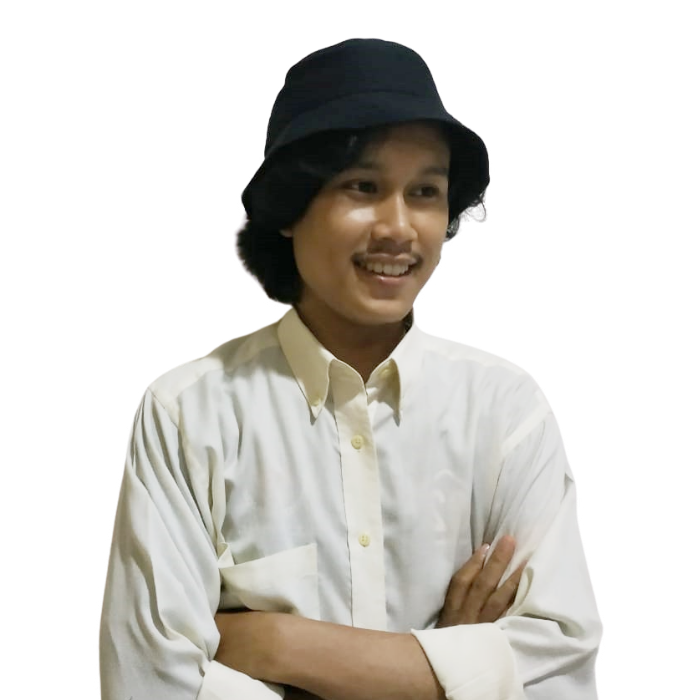

About Me
Perkenalkan Nama Saya Ajib Roziq, bisa dipanggil "Ajib" atau "Aroz". Saya lulusan Teknik Informatika Universitas Pamulang. Saya sangat tertarik pada bidang teknologi informasi mulai dari pengembangan Website sampai Design grafis. Saya sangat senang belajar akan hal baru, senang juga rasanya bila bisa bertukar fikiran dengan new scope yang mampu menjadi mind booster bagi saya.
See More